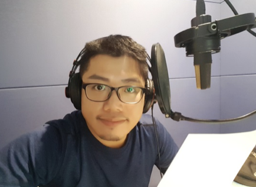

簡介

文瀚大學唸的是大傳（主修電子、公關）與戲劇（主修編劇、導演）。曾是兢兢業業小記者，也曾是爆肝攝影記者；曾演過舞台劇，也曾嘗試不是人幹的導演；曾是電台DJ主播，也曾玩配音、玩到全國第三；曾是全校主播大賽雙料冠軍，也曾獲選全國大專優秀青年；喜愛影像與聲音創作，攝影與廣播類，也都曾全國前三。
活到現在，許多戲劇性的曾經、成為文瀚人生的養分，大體言之，文瀚只是汲汲營營於生活、且平凡不過的庸俗人，不過熱情與態度，可能是文瀚與一般人、還稍稍有些不同的地方。
將一切榮耀，歸給主。
資歷
學業資歷
-
台北廣告工程商業同業公會 92（2004／06／19）、
93（2005／05／28）、94（2006／05／27）、
95（2007／06／08）學年度會員子女獎學金。
- 96年度救國團全國大專優秀青年獎學金（2007／03／28）。
-
私立中國文化大學95學年度「張其昀先生紀念獎學金─特殊才藝傑出表現」（95學年度第二學期）。
- 國泰金融集團2007客戶子女獎學金（2007／06）。
得獎資歷
- 96學年度救國團全國大專優秀青年（2007／03／28）。
播音類
-
國立交通大學數位創意中心「尋找校園聲優達人」競賽─聲優銅賞獎（2005／11／25）。
-
第二屆台灣大專院校「貳零紀念」影音聯展─廣播作品類貳獎（2006／04／30）。
-
第四屆華岡電視新聞台主播大賽─第一名（2006／05／15）。
-
第四屆華岡電視新聞台主播大賽─第一名（2006／05／15）。
-
第九屆華岡電台主播大賽─國語組第一名（2006／05／19）。
-
第十五屆時報廣告金犢獎─廣播廣告類入圍×1＆技術類文案對白項初審評審團優選獎×1（2006／05）。
-
第一屆「TVBS大學新聞獎」─紀錄報導類入圍×1（2006／11／12）。
-
第四屆國立中正大學「新傳獎」─最佳外校廣播獎（2007／04／26）。
-
第三屆台灣大專院校「貳零紀念」影音聯展─廣播作品類廣播廣告入圍×1（2007／04／28）。
攝影類
-
「2003文化大學攝影比賽」─傳統組第二名＆入選×3（2003／12／25）。
救國團台北市工青二隊北青攝影聯誼會「象山少女人像」攝影比賽二月份觀摩月賽─入選×4（2004／03／10）。
-
第二屆台灣大專院校「貳零紀念」影音聯展─數位攝影類（單張作品）參獎＆入圍×2（2006／04／30）。
-
第三屆「聚焦東吳─東吳的變與不變」攝影比賽─第一季季冠軍＆決賽銅牌獎＆佳作×2（2006／06）。
-
「2006國家地理國際攝影大賽」台灣區選拔賽─自然世界類佳作×1（2006／06）。
-
2006聯合勸募「同學你嘛幫幫忙─創意愛心
請你秀SHOW」徵案比賽─攝影類第三名（2006／08／17）。
-
第三屆台灣大專院校「貳零紀念」影音聯展─數位攝影類（單張作品）入圍×1（2007／04／28）。
企劃類
-
私立中國文化大學94學年度「華岡要更好」校園創意大賽─活動企劃組優等獎（2005／12／20）。
主持資歷
-
國立教育廣播電台─單元節目「校園DJ
SHOW─寰宇啟示錄」製作、主持（2005／05〜08）。
-
私立中國文化大學新聞系華岡實習廣播電台─單元節目「自在有樂町」製作、主持（94〜95學年度）。
-
私立中國文化大學新聞系華岡實習廣播電台─主播（95學年度第一學期）。
-
GOLD
FM聯播網台北健康電台─節目部助理新聞編播（2009／05～2010／05）。
-
張樂「2012『愛，時光旅程』攝影展」發表會─主持（2012／02／10）。
-
「2014桐舟共渡─龍潭鄉歸鄉文化季」桃園縣縣長盃龍舟競賽─實況轉播（2014／05／31～06／02）。
演出資歷
-
大可樂果劇團2004年度公演「長白山上」─飾獨眼龍（2004／12／14）。
-
第十七屆台北國際書展新天鵝堡（德國桌上遊戲）有限公司促銷戲《空中花園》、《亞美利哥》導演（2009／02／07）。
教學資歷
-
國立台灣科學教育館96年暑期「繪聲魔法─科學廣播營」助教（2007／08／06～08）。
-
偶像藝人呂金象之聲音訓練（2016／03／20～2017／03／20，2017／04／20～2018／04／20）。
-
社團法人中華影視造型文化創意協會106下半年度「播音訓練及活動主持實務班」之播音課座講師（2017／11／04）。
-
社團法人中華美容造型設計教育學會107上年度產業人才投資方案「婚禮＆活動主持訓練班─口語訓練課程」講師（2018／09／20）。
-
社團法人中華影視造型文化創意協會107下半年度「婚禮主持訓練班第2期」─口語訓練講師（2019／01／26）。
演講／受訪資歷
-
私立淡江大學大傳系企業導師請益─「聲優的心事誰人知」（2013／10／09）。
-
私立輔仁大學影傳系、大傳系聲音訓練專題演講─「配音工作甘苦談─你不知道的職場潛規則」（2015／06／05）。
-
私立佛光大學傳播系大一課程「國語正音與口語表達」之學生專訪（2015／12／12）。
-
News
98電台現場節目「愛你22小時」（王文華主持）之受邀來賓（2015／12／14）。
-
私立淡江大學105年度教育部獎勵大學教學卓越計畫／綜合型大學排名專題演講─「配音兩三事」（2016／11／21）。
配音資歷
-
目前主要配音範疇，含括廣告、簡介、節目／單元旁白、紀錄片、電視／電影預告、（兒童）有聲書、典禮報序、戲劇類…等。
作品
Contact
-
Email: qqo@yahoo.com.tw
-
Facebook: https://www.facebook.com/YanYuNan
-
Line: sssss123